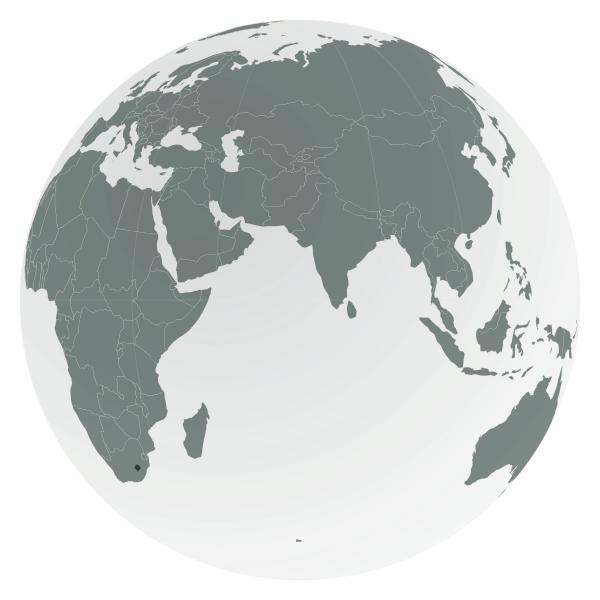

Géomaticienne & Développeuse
Dinah Fanilontsoa
Je transforme des territoires en données, et des données en interfaces. De Madagascar à la Corée du Sud, mon parcours cartographie autant de lieux que de lignes de code.

Quatre territoires, une trajectoire
De Madagascar à la Corée du Sud, en passant par La Réunion et la France : chaque étape a façonné ma double identité de géomaticienne et de développeuse. Cliquez sur un territoire pour l'explorer.
Académique Professionnel
Outils & technologies
Classés par métier, avec mon niveau de maîtrise pour chacun.
Cartographie & SIG
QGIS
85%
OpenStreetMap
75%
Google Earth Engine
60%
PostGIS
65%
Développement web
PHP / Yii
80%
React
65%
JavaScript
70%
HTML / CSS
80%
Langages & données
Python
70%
R / RShiny
55%
Java
50%
MongoDB
60%
MySQL
70%
Outils & gestion de projet
Git
75%
Docker
45%